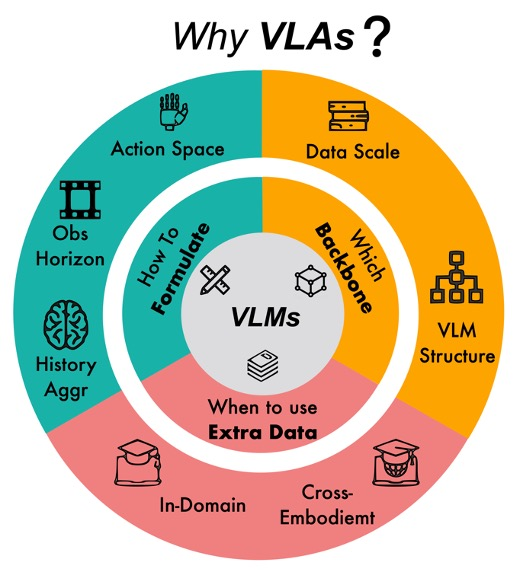
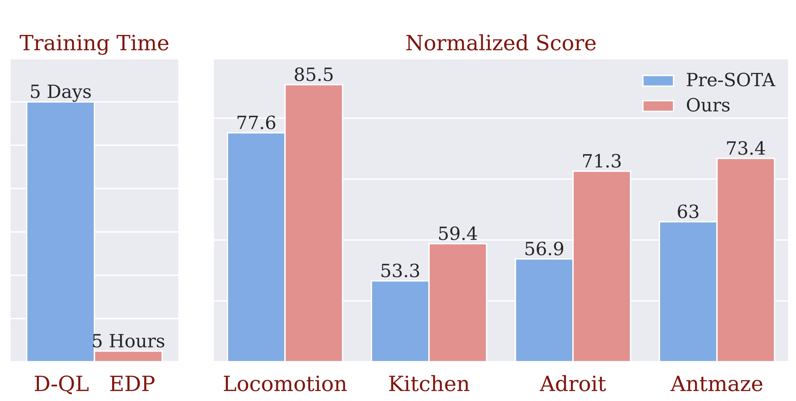
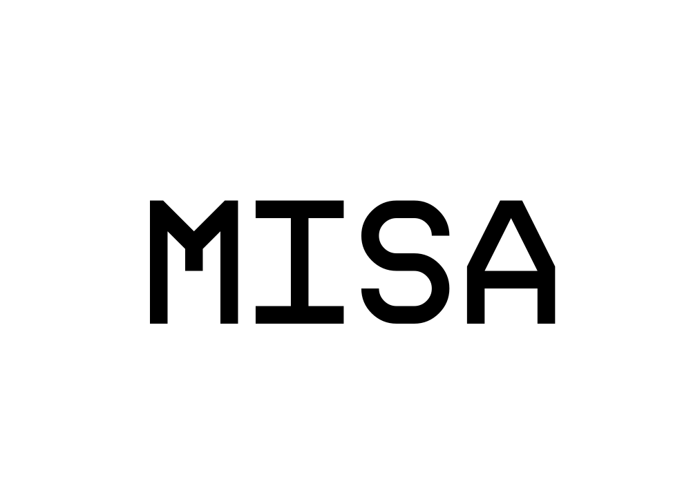
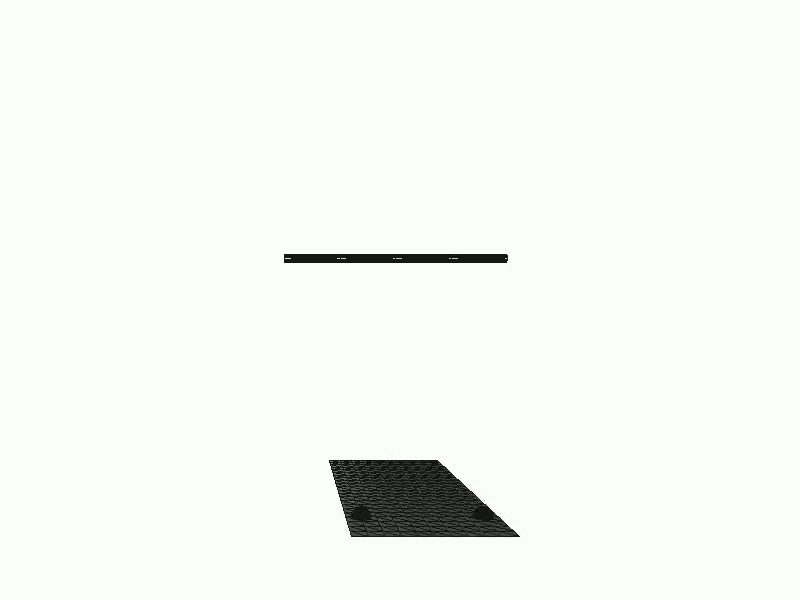
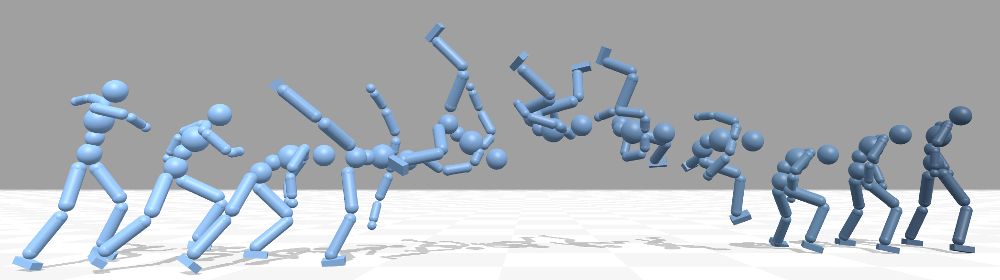
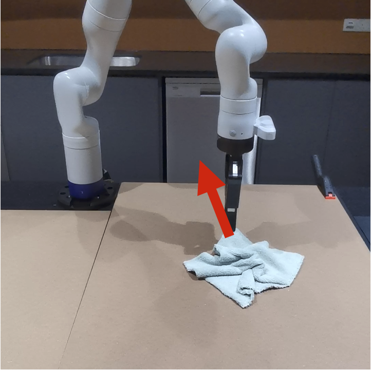
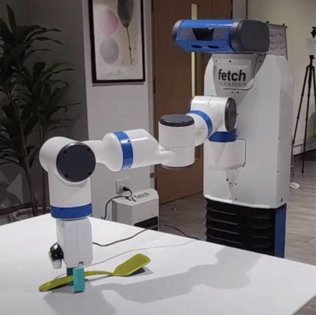
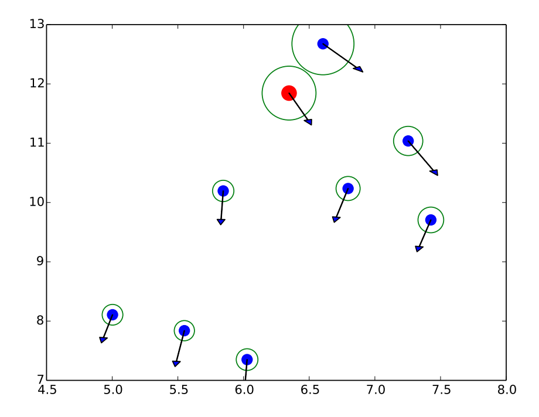

Xiao Ma
I am a staff research scientist at ByteDance Seed, leading the robotic foundation model team. Prior to that, I pursued my PhD at National University of Singapore, advised by Prof. David Hsu. I have worked as research scientist at Dyson Robot Learning Lab, led by Dr. Stephen James and at Sea AI Lab, hosted by Prof. Shuicheng Yan and Dr. Min Lin. My research spans across reinforcement learning, robotics, and multi-modal models.
We're seeking research scientist (interns) in robotics. Please drop me an email if you're interested.
photo credits to Rachel Li Rui ♥
News
[Dec. 2025] I gave talks at NUS and THU about robot foundation models.
[Dec. 2025] We have released Seed
GR-RL, our VLA-RL model that for the first time learns to lace up your shoes.
[Oct. 2025] RoboVLMs has been accepted to Nature Machine Intelligence (NMI).
[Sept. 2025] We have released ByteWrist, our wrist design for dexterous manipulation in compact spaces used in GR-3.
[Sept. 2025] 4 papers accepted to NeurIPS 2025.
Show more
[Sept. 2025] I'm serving as an area chair of ICLR 2026.
[Aug. 2025] 1 paper accepted to EMNLP 2025.
[July 2025] We have released Seed
GR-3, our latest Vision-Language-Action model for generalizable, dexterous, and robust robotic
manipulation.
[Jan. 2025] 1 paper accepted to ICRA 2025.
[Sept. 2024] 1 paper accepted to CoRL 2024.
[Jun. 2024] 1 paper accepted to RA-L 2024.
[Feb. 2024] 1 paper accepted to CVPR 2024.
[Sept. 2023] 3 papers accepted to NeurIPS 2023.
[Feb. 2023] 1 paper accepted to CVPR 2023.
[Jan. 2023] 3 papers accepted to ICLR 2023 (1 oral 2 posters)!
Selected Publications (Full publication list)

GR-RL: Going Dexterous and Precise for Long-Horizon Robotic Manipulation
Technical Report, 2025

ByteWrist: A Parallel Robotic Wrist Enabling Flexible and Anthropomorphic Motion for Confined Spaces
Technical Report, 2025


Towards Generalist Robot Policies: What Matters in Building Vision-Language-Action
Models
Nature Machine Intelligence, 2025

BiGym: A Demo-Driven Mobile Bi-Manual Manipulation Benchmark
Conference on Robot Learning (CoRL), 2024

Redundancy-aware Action Spaces for Robot Learning
IEEE Robotics and Automation Letters (RA-L), 2024

Hierarchical Diffusion Policy for Multi-Task Robotic Manipulation
Proceedings of the IEEE Conference on Computer Vision and Pattern
Recognition (CVPR), 2024

InsActor: Instruction-driven Physics-based Characters
Conference on Neural Information Processing Systems (NeurIPS), 2023





DiffMimic: Efficient Motion Mimicking with Differentiable Physics
International Conference on Learning Representations (ICLR), 2023

Learning Latent Graph Dynamics for Deformable Object Manipulation
International Conference on Robotics and Automation (ICRA), 2022

Ab Initio Particle-based Object Manipulation
Robotics: Science and Systems (RSS), 2021

Spatio-Temporal Graph Transformer Networks for Pedestrian Trajectory Prediction
European Conference on Computer Vision (ECCV), 2020